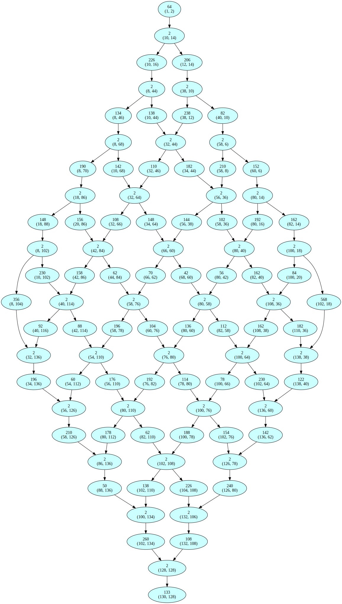
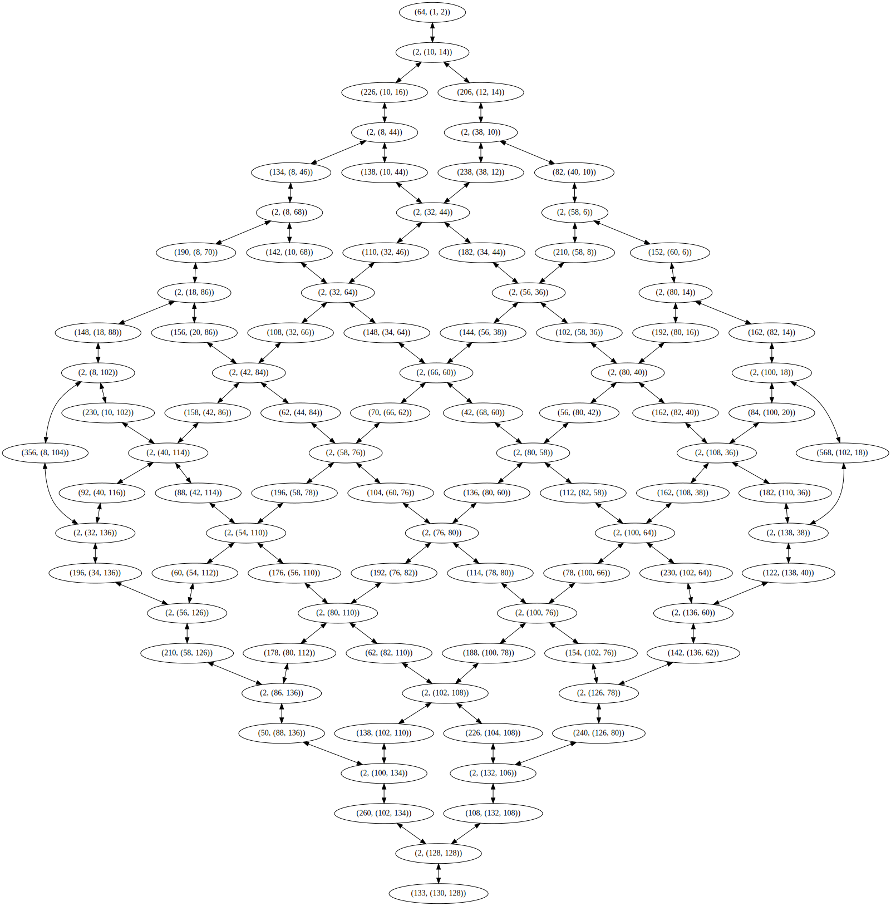

Year 2023 Day 23#
[1]:
from advent_of_code.common.common import get_input_file_path
from advent_of_code.year_2023.problem_202323 import AdventOfCodeProblem202323
from advent_of_code.year_2023.problem_202323 import (
bruteforce_paths_in_exploration_tree,
create_flatset,
)
from advent_of_code.common.store import ExampleInputsStore
from advent_of_code.common.graph_visualization import construct_dot_graph_from_dict
from advent_of_code.year_2023.problem_202323 import create_flat_simplified
Test data#
Part 1#
[2]:
EXAMPLE_INPUT = ExampleInputsStore.from_private_toml().retrieve("test_problem_202323")
---------------------------------------------------------------------------
AttributeError Traceback (most recent call last)
Cell In[2], line 1
----> 1 EXAMPLE_INPUT = ExampleInputsStore.from_private_toml().retrieve("test_problem_202323")
AttributeError: type object 'ExampleInputsStore' has no attribute 'from_private_toml'
[3]:
text = EXAMPLE_INPUT
parsed = AdventOfCodeProblem202323.parse_text_input(text)
---------------------------------------------------------------------------
NameError Traceback (most recent call last)
Cell In[3], line 1
----> 1 text = EXAMPLE_INPUT
2 parsed = AdventOfCodeProblem202323.parse_text_input(text)
NameError: name 'EXAMPLE_INPUT' is not defined
[4]:
from advent_of_code.year_2023.problem_202323 import (
compute_exploration_tree,
flatten_exploration_tree,
)
hiking_trail = hk = parsed
starting_position = (1, 2)
tree = compute_exploration_tree(hk, starting_position)
flat = flatten_exploration_tree(tree)
---------------------------------------------------------------------------
NameError Traceback (most recent call last)
Cell In[4], line 7
1 from advent_of_code.year_2023.problem_202323 import (
2 compute_exploration_tree,
3 flatten_exploration_tree,
4 )
----> 7 hiking_trail = hk = parsed
8 starting_position = (1, 2)
10 tree = compute_exploration_tree(hk, starting_position)
NameError: name 'parsed' is not defined
[5]:
flat_simplified = create_flat_simplified(flat)
dot = construct_dot_graph_from_dict(flat_simplified)
dot
---------------------------------------------------------------------------
NameError Traceback (most recent call last)
Cell In[5], line 1
----> 1 flat_simplified = create_flat_simplified(flat)
2 dot = construct_dot_graph_from_dict(flat_simplified)
3 dot
NameError: name 'flat' is not defined
[6]:
bf = bruteforce_paths_in_exploration_tree(tree, 0)
---------------------------------------------------------------------------
NameError Traceback (most recent call last)
Cell In[6], line 1
----> 1 bf = bruteforce_paths_in_exploration_tree(tree, 0)
NameError: name 'tree' is not defined
[7]:
bf
---------------------------------------------------------------------------
NameError Traceback (most recent call last)
Cell In[7], line 1
----> 1 bf
NameError: name 'bf' is not defined
[8]:
import re
# It works ^^
flattened = [int(c) for c in re.findall(r"\d+", str(bf))]
flattened
---------------------------------------------------------------------------
NameError Traceback (most recent call last)
Cell In[8], line 4
1 import re
3 # It works ^^
----> 4 flattened = [int(c) for c in re.findall(r"\d+", str(bf))]
5 flattened
NameError: name 'bf' is not defined
[9]:
import numpy as np
np.array(list(reversed(sorted(flattened)))) - 1
---------------------------------------------------------------------------
NameError Traceback (most recent call last)
Cell In[9], line 3
1 import numpy as np
----> 3 np.array(list(reversed(sorted(flattened)))) - 1
NameError: name 'flattened' is not defined
Part 2#
Assumption: In Part 1, we already explored all paths. The explored graph should be reusable and transformed into an undirected graph. No need to backtrack. Note: if bugs arise, verify more formally this assumption.
[10]:
from advent_of_code.year_2023.problem_202323 import (
create_flat_simplified_tuple,
make_undirected_graph,
)
flat = create_flat_simplified_tuple(flat)
couples = make_undirected_graph(flat, bidirectional=True)
couples_for_visu = make_undirected_graph(flat, bidirectional=False)
couples_mapping = {t[0]: t[1] for t in couples}
couples_mapping
---------------------------------------------------------------------------
NameError Traceback (most recent call last)
Cell In[10], line 7
1 from advent_of_code.year_2023.problem_202323 import (
2 create_flat_simplified_tuple,
3 make_undirected_graph,
4 )
----> 7 flat = create_flat_simplified_tuple(flat)
8 couples = make_undirected_graph(flat, bidirectional=True)
9 couples_for_visu = make_undirected_graph(flat, bidirectional=False)
NameError: name 'flat' is not defined
[11]:
flat
---------------------------------------------------------------------------
NameError Traceback (most recent call last)
Cell In[11], line 1
----> 1 flat
NameError: name 'flat' is not defined
[12]:
create_flatset(flat)
---------------------------------------------------------------------------
NameError Traceback (most recent call last)
Cell In[12], line 1
----> 1 create_flatset(flat)
NameError: name 'flat' is not defined
[13]:
len(flat)
---------------------------------------------------------------------------
NameError Traceback (most recent call last)
Cell In[13], line 1
----> 1 len(flat)
NameError: name 'flat' is not defined
[14]:
from advent_of_code.common.graph_visualization import construct_dot_graph_from_couples
visu = construct_dot_graph_from_couples(couples_for_visu)
visu
---------------------------------------------------------------------------
NameError Traceback (most recent call last)
Cell In[14], line 4
1 from advent_of_code.common.graph_visualization import construct_dot_graph_from_couples
----> 4 visu = construct_dot_graph_from_couples(couples_for_visu)
5 visu
NameError: name 'couples_for_visu' is not defined
Actual data#
Part 1#
[15]:
text = (get_input_file_path(2023, 23)).read_text()
parsed = AdventOfCodeProblem202323.parse_text_input(text)
[16]:
hiking_trail = hk = parsed
starting_position = (1, 2)
tree = compute_exploration_tree(hk, starting_position)
flat = flatten_exploration_tree(tree)
flat_simplified = create_flat_simplified(flat)
dot = construct_dot_graph_from_dict(flat_simplified)
dot
[16]:

Part 2#
[17]:
flat = create_flat_simplified_tuple(flat)
couples = make_undirected_graph(flat, bidirectional=True)
couples_for_visu = make_undirected_graph(flat, bidirectional=False)
visu = construct_dot_graph_from_couples(couples_for_visu)
visu
[17]:
